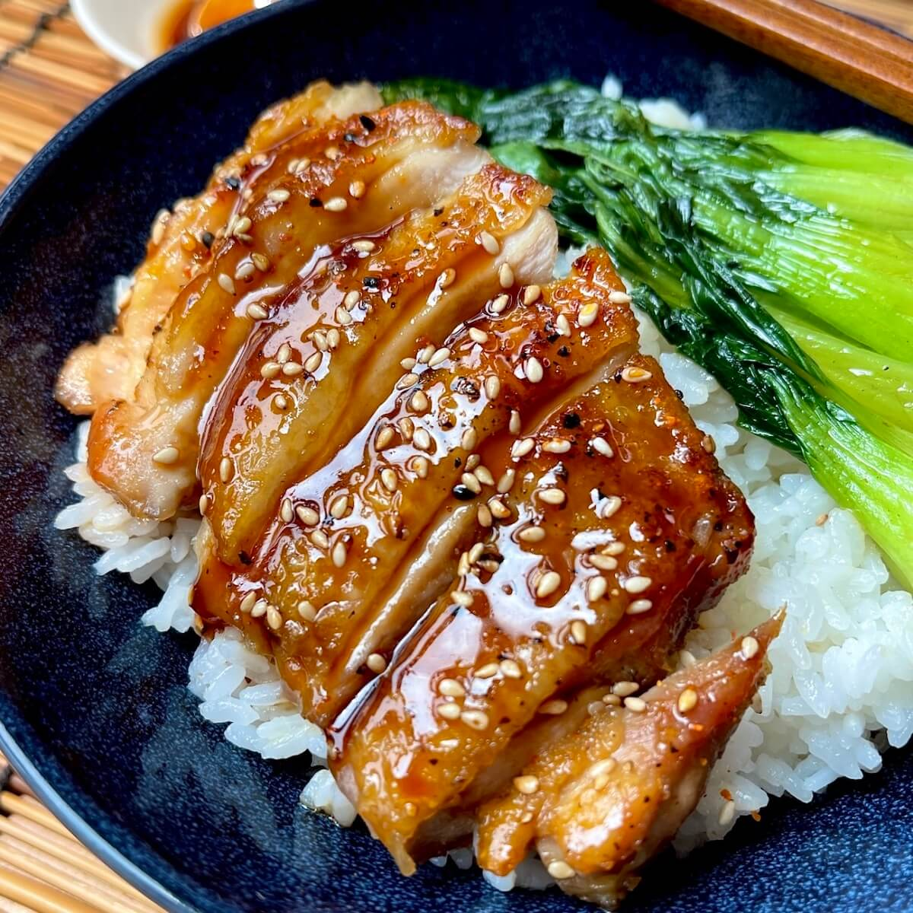

Teriaki chicken

Description
A Teriaki chicken recipe
Ingredients:
- Sesame oil
- Chicken
- Garlic
- Ginger
- Honey
- Soy sauce
- Rice wine vinegar
- Sesame seeds
- Spring onions
- Sticky rice
- Bok choi
Steps:
- Heat the oil in a non-stick pan over a medium heat.
- Add the chicken and fry for 7 mins, or until golden.
- Add the garlic and ginger and fry for 2 mins.
- Stir in the honey, soy sauce, vinegar and 100ml water.
- Bring to the boil and cook for 2 - 5 mins over a medium heat until the chicken is sticky and coated in a thick sauce.
- Scatter over the spring onions and sesame seeds, then serve the chicken with the rice and steamed veg.